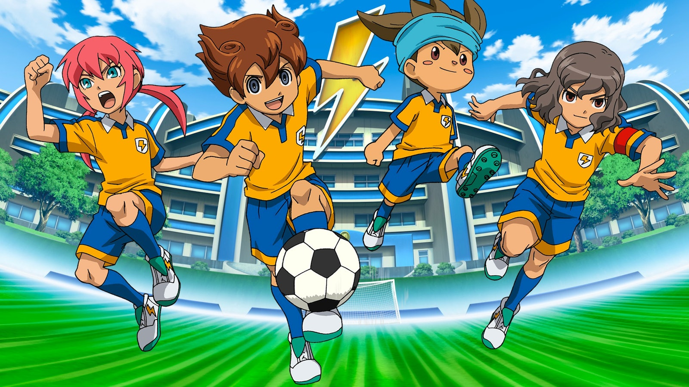
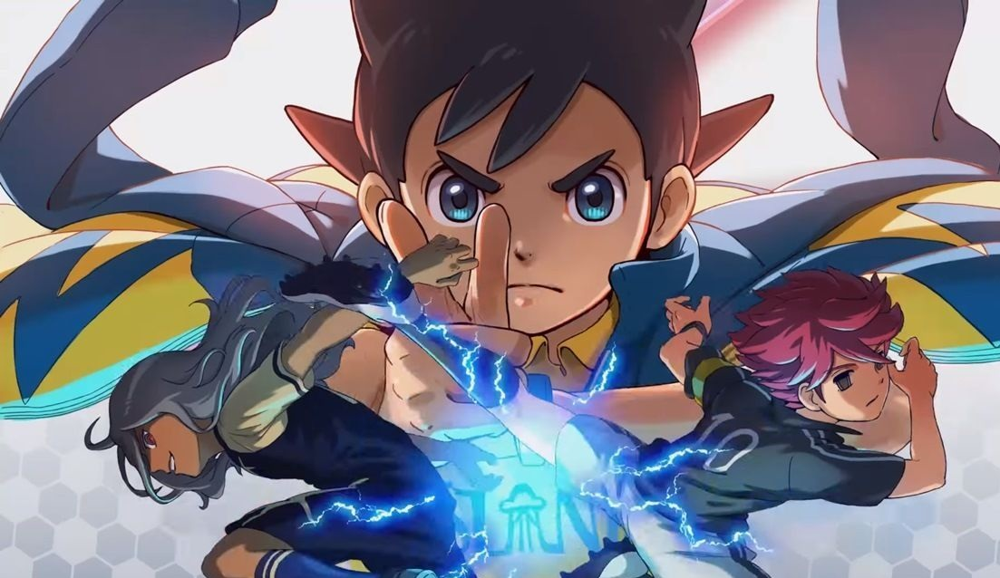
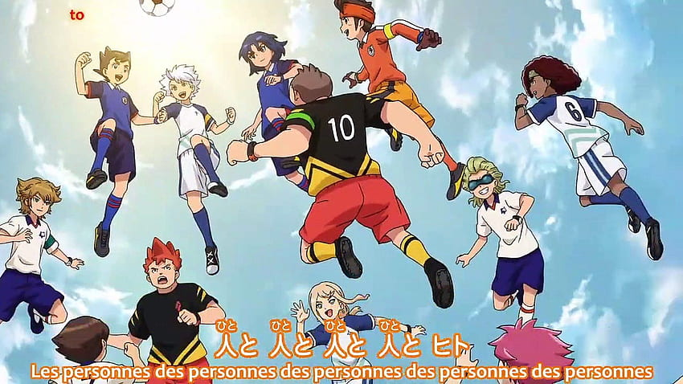

es una serie de manga creada por Tenya Yabuno, que está basado en el videojuego del mismo título para la consola portátil Nintendo DS. El manga fue publicado por la editorial Shogakukan en la revista CoroCoro Comic desde junio de 2008. En el 2010, el manga obtuvo el premio Kodansha Manga Award en la categoría de mejor Manga Infantil, reconocimiento que obtuvo nuevamente en el año 2012.
es un anime que es la secuela de la primera saga Inazuma Eleven producido por Level-5 y OLM Inc basado en el el guion del cuarto videojuego (sin contar sus ediciones) cuya historia es el inicio de la Saga de Arion. Fue estrenado el 04 de Mayo del 2011 en Japón siendo emitido por Tv-Tokyo y terminado sus emisiones el 11 de Abril del 2012, siendo sucedido por su segunda temporada Inazuma Eleven GO Chrono Stones.
los hechos ocurridos en la primera temporada de esta saga estará situada un año después de la primera temporada de la Saga de Mark, pero en un mundo paralelo donde algunos hechos nunca ocurrieron como la invasión de la Academia Alius o las muertes de algunos personajes como Aiden Froste y Xavier Schiller aunque con una diferencia de edad a comparación de sus contrapartes originales. Uno de los protagonistas principales de esta saga se llama Sonny Wright que junto con sus compañeros de la Isla Remota se van a Tokio (Ciudad Inazuma) para unirse al club de fútbol del Instituto Raimon para ganar el torneo Fútbol Frontier y así salvar a su club de fútbol en su instituto de origen.
es la segunda temporada de la Bilogía del Gran Camino de los Héroes, la tercera saga de la franquicia de
Inazuma Eleven y la sucesora de Inazuma Eleven Ares.
Su anuncio fue realizado en el Inazuma Fest 2018, el día 26 de Agosto de 2018, junto a los integrantes
de la Inazuma Japón.

es el delantero estrella del Raimon y del Inazuma Japón, la selección nacional de Japón. Lleva el dorsal número 10 en todos los equipos en los que ha jugado.
Last updated 3 mins ago
Endo es el Capitán, portero y a veces líbero de la secundaria Raimon. Luego lo es de los SUPER ONCE de Japón. El nunca se ha dado por vencido y cuando está perdiendo un partido sigue luchando hasta que logra la victoria. Su mejor amigo es Shuya Goenji, pues es el primer jugador que le enseño un nuevo fútbol.
Last updated 3 mins ago

Es un delantero de Génesis y lleva el dorsal 11, en los Super Once de Japón es un delantero y lleva el dorsal 18. Siempre está apoyando a sus amigos para ganar y es un buen estratega y guia, hace todo lo posible para ganar, nunca se rinde y siempre busca evolucionar sus tecnicas (pues como se ve en el capitulo 100 tiene un muy buen control del balon, supero a casi 5 defensas e hizo el gol; tiene muy buenos regates) .
Last updated 3 mins ago

Kido llega a ser considerado como el mejor estratega del mundo a nivel estudiantil ; su tecnica, control del balón y creación del juego ofensivo y también defensivo lo hace un mediocampista-atacante sorprendente.
Last updated 3 mins ago

Fubuki es probablemente el jugador mas rápido de la serie junto con Kazemaru, es increíble robando el balón o interceptando los pases, además sus tiros son de gran fuerza y precisión.Tambien se destaca de el que puede jugar de delantero y defensa
Psdt:No es demasiado hermoso ese tiro adn?
Fidio Aldena es un jugador de ORFEO de Italia.Juega como delantero.Cuando Hidetoshi Nakata no esta en el equipo,él es el capitan.Es uno de los mejores delanteros de la serie. Es muy veloz y agil, pero igualmente su control del balón, la tecnica y potencia de sus tiros y una buena recuperacion de balón lo hacen en unos de los mejores jugadores de la serie.
Last updated 3 mins ago

Es de caracter muy paciente y tranquilo, le gusta decir frases de dioses y se ríe facilmente cuando hace algo bien, se pudo notar que la única vez que se enojó fue cuando perdió contra Raimon y sus pupilas empezaron a ejercer un color rojo muy fuerte.
Last updated 3 mins ago

es uno de los villanos más importantes de la franquicia de Inazuma Eleven. Fue el entrenador de la Royal Academy, el Zeus y la Royal Academy Redux. En la tercera temporada se hace llamar Mr. D (ミスターK, Mr. K en japonés) y fue el entrenador del Equipo D y Orfeo.
Last updated 3 mins ago
es el protagonista de Inazuma Eleven GO (Tanto en el anime, como en el juego de Nintendo 3DS). Es familiar de Aki Kino y juega como Mediocampista. Juega en el equipo de la Secundaria Raimon, esta vez en la nueva generación 10 años después del FFI.Tenma se vuelve el capitán del equipo cuando Shindo recibe una grave lesión.
Last updated 3 mins ago
es un delantero de Raimon. En los primeros capítulos es un antagonista de los Super Once GO, luego se une a Raimon con ayuda de su hermano. Antes formaba parte de los Caballeros Negros, siendo controlado por el Sector V. Actualmente posee el dorsal 10 (igual que Goenji) y sigue manteniendo su actitud igual, pero ahora es un poco sereno y más amigable. Es de los mejores jugadores de Raimon.
Last updated 3 mins ago
Es un personaje de Inazuma Eleven GO Chrono Stone. El es un Delantero y Capitán del ZanaRk Domain. Mas tarde deja de ser miembro de El Dorado y pasa a ser miembro del Second Stage Children con su Equipo Zan y después se aliada con El Dorado y hace parte de los Once Definitivos. También fue el entrenador del Protocolo Omega 3.0.
es el capitán y mediocampista de la Secundaria Raimon (GO). Al principio no creía en el fútbol de Tenma y no le caía bien, pero después Tenma le abrió los ojos y le mostró que no importan las reglas del Sector V sino el amor que uno siente por el fútbol.Tiene su propio avatar, el cual lo nombró como Maestro Musico.
Last updated 3 mins ago

conocido bajo su nombre clave SARU. Es el líder de la organización Fader, el capitán y un delantero del equipo Lagoon. Es el antagonista principal de Inazuma Eleven GO Chrono Stone.
Last updated 3 mins ago

es el capitán del poderoso Instituto Arakumo el cual se enfrenta a Raimon como el oponente semi-final del Torneo de Fútbol Holy Road. Amemiya veía a Tenma en la televisión desde el hospital hace demasiado tiempo, se podría decir que es un fan de Tenma. Desde niño siempre se la pasó en el hospital por una terrible enfermedad que no le permite jugar fútbol.
Last updated 3 mins ago

es un jugador de Raimon GO , juega como defensa y como portero. Es el mejor amigo de Tenma. En Chrono Stone está en el club de Pin Pon o Tenis de mesa no reconoce a Tenma al igual que los demas ya que no existe el club de soccer.
Last updated 3 mins ago
Es uno de los tres protagonistas de Inazuma Eleven Ares no Tenbin. También es uno de los delanteros del equipo Inakumi Raimon .
Last updated 3 mins ago
Es uno de los tres protagonistas de Inazuma Eleven Ares no Tenbin. Es un delantero de Otei Tsukinomiya. Es conocido como el Emperador Táctico
Last updated 3 mins ago

Es uno de los tres protagonistas de Inazuma Eleven Ares no Tenbin. Juega como delantero en el equipo Seisho Gakuen hasta que su equipo fue eliminado del torneo Fútbol Frontera, al ser derrotados de forma muy aplastante por la escuela Otei Tsukinomiya
Last updated 3 mins ago

Mitsuru era un niño de media estatura, tenía un tono de piel claro y el pelo medio largo de color azul oscuro, que le llega hasta el cuello, con dos flequillos en la frente. También tiene ojos de color azul marino.
Last updated 3 mins ago

Se perdio y aparecio aca
Last updated 3 mins ago

Posee una actitud muy diferente a su niñez siendo este una persona rebelde hasta llegar al punto de juntarse con malas amistades y escapar de Casa. Ha demostrado tener buenas habilidades para el soccer, su aspecto cambia drasticamente y pertenece al Equipo Eisei Gakuen (Ares) como una de las condiciones que establecio Seijiro Kira a Hitomiko Kira si queria que el patrocinara el equipo Eisei Gakuen para participar en el torneo
Last updated 3 mins ago
Last updated 3 mins ago
Last updated 3 mins ago
Last updated 3 mins ago
Last updated 3 mins ago
Last updated 3 mins ago
Last updated 3 mins ago